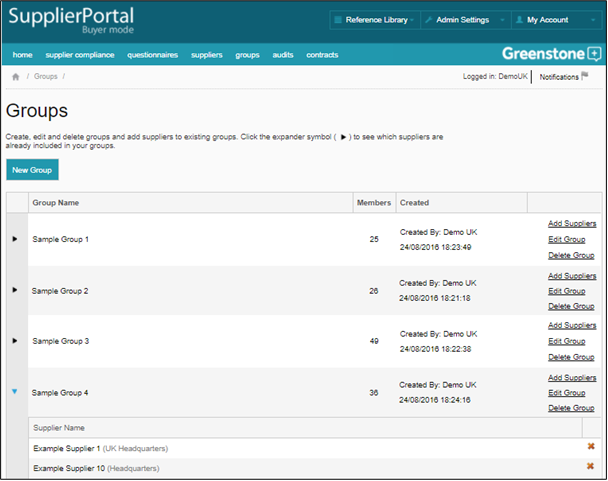

Groups are used in Supply-Chain Sustainability (SCS) to place suppliers into defined categories and to allow more efficient management and analysis.
On the Groups page, click ‘New Group’ to create a new group, or ‘Edit Group’ to edit an existing one. On the following page enter the group’s name, description, and a tick box to indicate whether that group should also be used as a benchmark. Clicking the expander icon (>) symbol to the left of the Group’s name will display a current list of Suppliers in that group. Click ‘Add Suppliers’ to add Suppliers to an existing group.
Suppliers can automatically be added to groups through the master list upload function.
